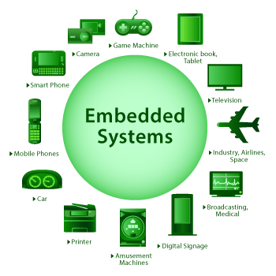

Bartek Kowalski - Embedded Systems
Home
Hover for information on Embedded Systems
What is an Embedded System?
How can we program Embedded Systems?
Who created the first embedded system and what was it used for?
Why are embedded systems useful?
Embedded Systems
Welcome to my website on Embedded Systems. Here, you will find information on
programming of embedded systems, and how to get started with them.

Copyright Ⓒ 2021 Bartek Kowalski.